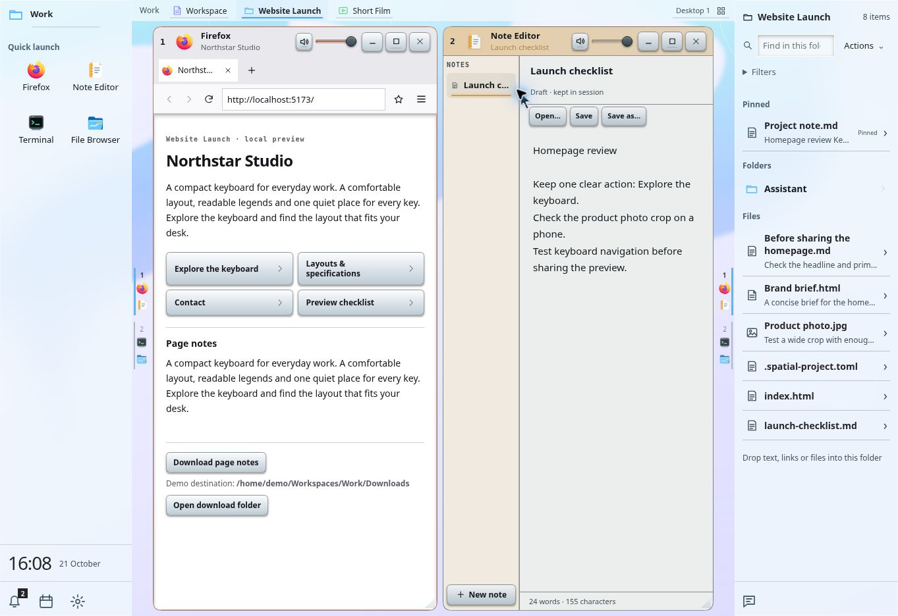
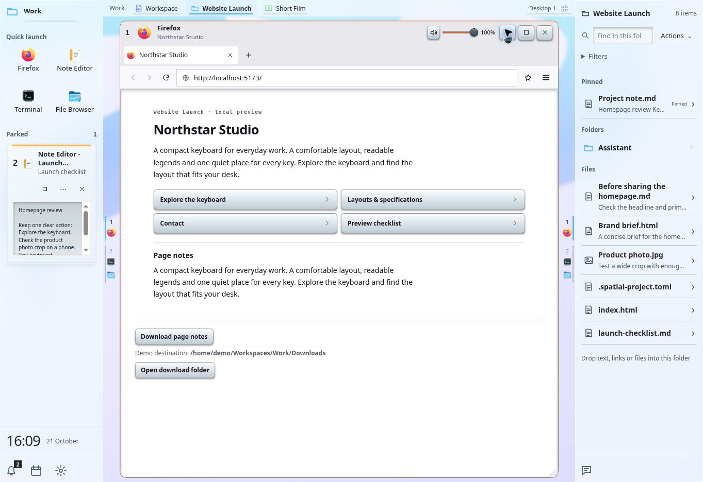
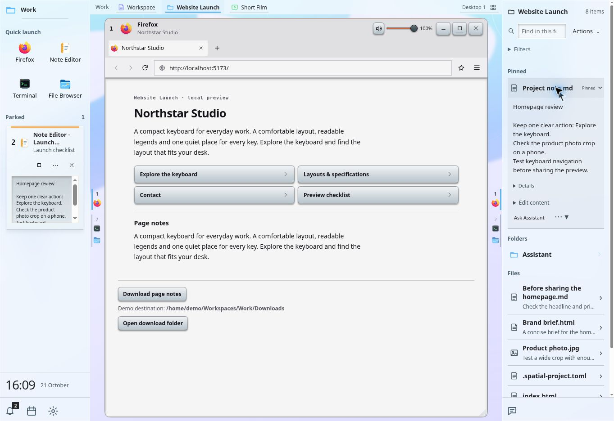
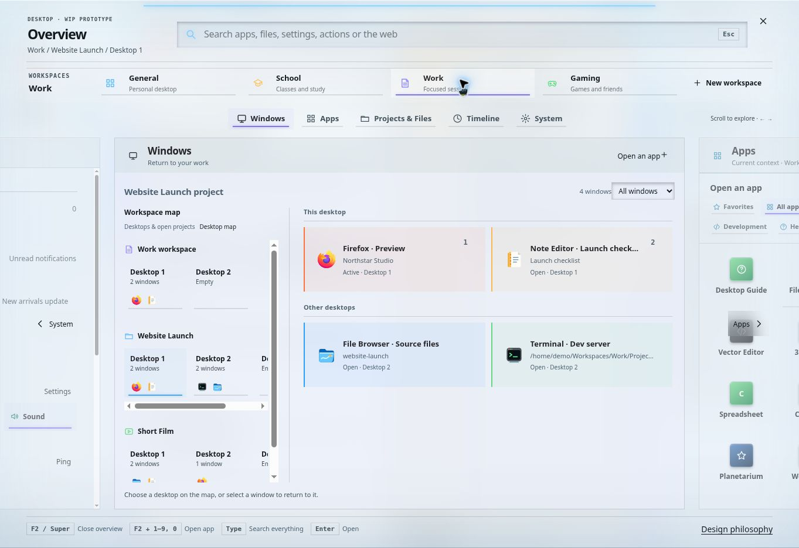
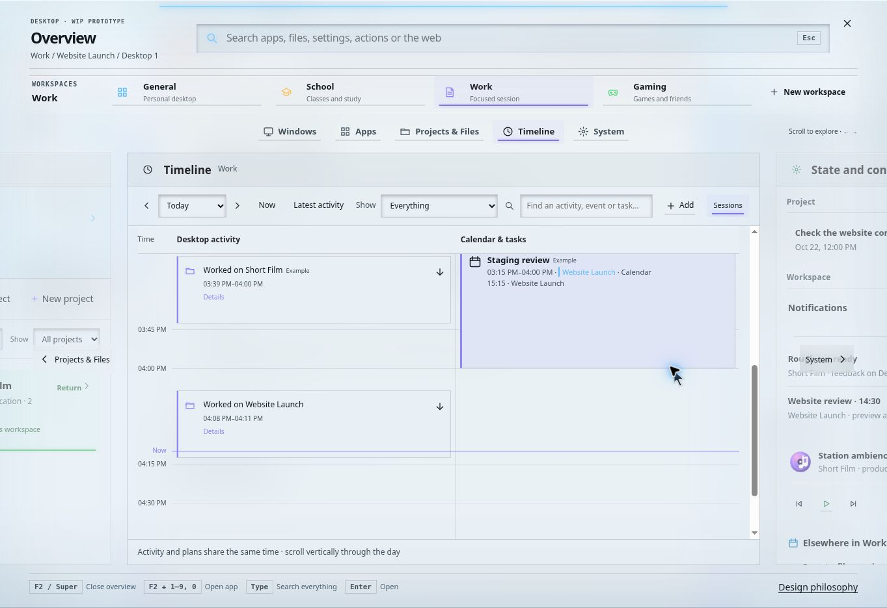
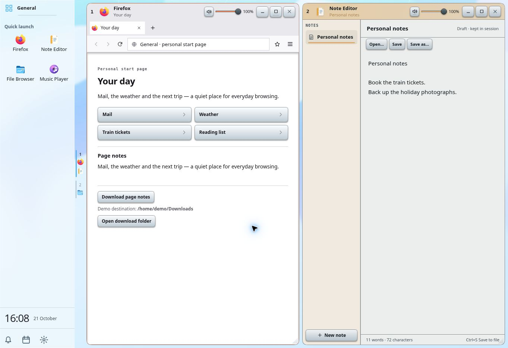
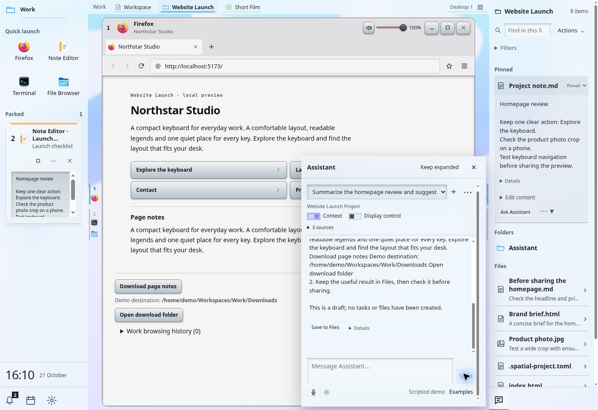

A DESKTOP EXPERIMENT BY XEF
Spatial Desktop
I often end up maximizing one window because arranging several beside each other takes too much effort. When I switch tasks, the windows, pages, notes and files I need can become difficult to keep track of.
I started Spatial Desktop after watching Scott Jenson’s talk. I want to explore how the desktop could keep those materials connected and help me return after an interruption. An integrated Assistant would work alongside me using the same windows and ordinary files.
The idea draws on spatial, associative and episodic memory: finding work by where it is, what it relates to, or when it happened.
This is a browser prototype for exploring the design. Applications and operating system behavior are simulated, and Assistant responses are scripted. Native desktop integration remains future work.
01 / START HERE
How the pieces fit together
A Workspace is the wider environment, such as Work or General. Inside it, I can use ordinary desktops or open Projects, each with its own column of desktops. Windows sit on those desktops.


- Workspace: Work. The wider environment containing these projects.
- Project: Website Launch. Short Film is another open project beside it.
- Desktop 1. One page of windows within Website Launch.
| Level | What it means here |
|---|---|
| Workspace | Work keeps its files, app sessions and personal context separate from General. |
| Project | Website Launch sits inside Work. It brings together a project folder, resources, windows and its own desktops. |
| Desktop | Desktop 1 in Website Launch holds the website preview and launch checklist. Desktop 2 holds the development server and source files. |
Projects are optional. Work also has its own ordinary desktop column for windows that do not belong to a project. Separating a Workspace from its Projects lets me keep work and personal life apart without separating browser profiles and app data for every small task.
One activity, from starting to returning
The screenshots follow Website Launch. In the populated demo, I can try this sequence:
- Start with the preview and checklist. Both are on the project’s first desktop; the source files and development server are on the next one.
- Park the checklist. It stays editable in the Apps panel while the preview gains space. The parked note remains available on the project’s other desktops.
- Switch to Short Film. That project has its own windows and desktops. Website Launch stays open in its own column, ready to return to.
- Find my way back. Overview shows the open project and its windows. If I only remember when I worked on it, Timeline offers a route to an earlier session and its related materials.
02 / WINDOWS AND PARKING
Keeping windows visible
When I work on a Jira request, I might have an editor, the request itself, email, Teams and several other windows open. At seven or ten windows, keeping track of everything becomes a task of its own.
Automatic tiling removes the need to keep arranging windows beside each other. It still needs a way to handle work that no longer fits comfortably on one screen. Desktops provide more space; parking keeps a window close when I do not need its full size.
I use a vertical stack of desktops so moving through them follows the mouse wheel. Scrolling over a desktop indicator or unused panel space moves between desktops; scrolling inside an app keeps its normal purpose. Edge markers show where I am and which apps are on the other desktops. Floating windows remain an option when a task needs manual placement.
Parking keeps a window useful in a smaller form. In Website Launch, I can edit the checklist in the Apps panel while the preview takes the space it left behind. The checklist follows me through this project’s desktops, but stays with Website Launch when I switch to Short Film. That scope keeps one project’s set-aside windows from following me into another.
The app hotbar gives each window a number for direct access. Separate instances get separate numbers, so I can reach the particular window I want without first finding its application group. Parking and panels do use screen space; the aim is to earn that space through useful content and quicker access.


- The checklist stays editable. Parking keeps its content and controls available.
- The preview gains space. The note no longer needs a full tile.
Why the panels and windows look different
I use opaque ABS plastic with rounded edges for application windows, and square glass surfaces for desktop panels and controls. The different shapes and materials are meant to make the application and the surrounding desktop easier to distinguish. Application colors provide a small identifying cue; lit lines inside toggles show a persistent on state.
Panels contain widgets such as Apps, Files and Assistant, and can be compact or expanded. This lets me trade panel detail for room to work while keeping familiar controls in a consistent place.
03 / PROJECTS AND FILES
Giving an activity its own place
I personally use one project for each Jira request. Someone editing a video might use a project for the entire video, even though it involves many separate tasks. Its size depends on the work.
A project gives that activity a place that survives switching to something else. In Website Launch, the preview, checklist and source files belong together even though they open in different applications. Switching to Short Film changes the active project without closing Website Launch. Closing a project is a separate action; the demo saves its simulated window layout for reopening.
Ordinary files are the foundation. The Files panel makes the project folder accessible beside any of its windows, and text files can expand directly in the panel. The same files can be used by different applications and the Assistant. Recorded origins, versions and links can help explain how saved materials relate to each other.
The initial launch checklist is a draft kept with its window. I can save it as a file when I want it in the project folder too. Keeping a window open and saving its document are separate actions.


04 / OVERVIEW
Finding the work I left open
After switching activities, I may remember the project name, recognize a window, or only know which file I need. Overview puts Windows, Apps, Projects & Files, Timeline and System within the same place.
For Website Launch, the Windows view shows its desktop column beside Short Film and the ordinary Work desktops. I can select the preview directly or find the source-file window on the next desktop. Projects & Files provides another route when I remember a document rather than an open window. Overview should let me use the clue I have without retracing every step.


05 / TIMELINE
Remembering the work around a file
Sometimes I remember opening a document before a meeting, but cannot remember its name. Timeline places recorded work beside calendar events, tasks and reminders so the meeting can become a point to search around.
In the Website Launch example, I can look near the staging review for the earlier work session, inspect its related materials and reopen the relevant file or page. This gives the activity around a document a role in finding it again.
The prototype groups recorded activity into sessions using time gaps and changes of project or Workspace. Sessions can have notes and links to files, pages and other recorded items. Reopening a material does not restore a complete historical state of the desktop or computer.
A long list of window switches could become another thing to manage. I want to test whether recognizable sessions and their materials provide enough context, and what should be recorded or left out. Clearer summaries and less repetition are still open work.


- A work session. Its related materials provide a route back to the activity.
- A planned event. A meeting can help locate work done around it.
06 / WORKSPACES
Separating work and personal life
I use the same computer for work and personal things. Their files, accounts and notifications can easily get mixed together. A personal notification appearing during a work screen share is one obvious example.
A Workspace separates that wider context. Work and General have their own Home, app sessions, browser history, clipboard, notifications and Timeline. Documents and downloads should land in the appropriate environment by default. Projects organize activities inside that boundary; they do not need a separate personal identity for each task.
Some things belong to the computer as a whole: appearance, hardware connections and master sound. Background apps intentionally remain available across Workspaces. Deliberate transfers should also remain possible, such as taking a music player from a personal Workspace into Work.
The browser demo models this separation with local state. Separate native browser accounts, cookies and operating system security isolation remain future work.


07 / ASSISTANT
Working alongside an Assistant
I want the Assistant to work in the desktop alongside me. While developing Spatial Desktop, for example, I could keep a website preview on another display, explain a change and watch the Assistant work on it through normal windows and files.
The conversation belongs to the current Workspace or Project. Each also has an Assistant working folder for outputs when I have not specified another destination. In Website Launch, this gives the conversation and its results a place beside the preview, notes and source files. Results remain ordinary files I can open and continue working on.
Readable context and permission to control a display are separate choices. Sharing a document for discussion should not by itself permit arranging windows. When display control is allowed, I want to see the work, pause it and take over.
Voice is another way to participate. The demo explores manual dictation, a wake phrase and continuous requests, with spoken replies controlled separately. Combining conversation with pasted text, code and attachments without ending the voice session is a planned interaction. Its potential for people who find visual navigation or mouse use difficult needs testing with those users.


08 / FULLSCREEN
Moving between fullscreen and other work
Fullscreen applications, especially games, should fit into the same environment. I want to bring a game into a tile, check a note or another application, and return to fullscreen with little disruption.
The demo illustrates this transition. Gamescope is the intended direction for trying it with real games; reliability across games and display setups still needs to be tested in a native prototype.
09 / THE EXPERIMENT
What I want to learn
Spatial Desktop combines familiar ideas: tiling, virtual desktops, project folders, activity history and customizable panels. The experiment is whether connecting them around the same activity makes work easier to follow and resume.
My design uses explicit projects and desktop columns to provide structure. Jenson’s spatial experiment explores a more organic arrangement. I want to understand whether my structure earns the effort of maintaining it, including for someone who prefers to work without projects.
The Website Launch sequence is a starting point for feedback: gather materials, work with them, switch away and return. Where did the arrangement help? What still had to be remembered? Which steps added effort? Those questions need real use and a native prototype before I can claim the design improves everyday work.